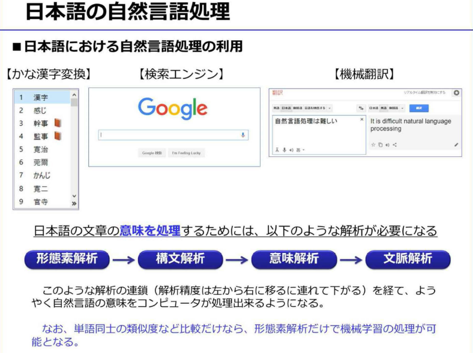
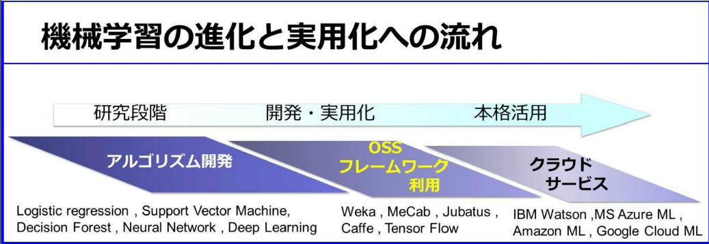

-
- 機械学習の実例
- 例えばEメールのスパム判定は機械学習で迷惑メールを自動判別
- 入力単語を予測して変換。これも機械学習
-
- 予測：最も実用化が進んでいる領域
- 識別：ディープラーニングの登場により、一気に精度が高まり、実用化が急速に始まったばかりの領域
- 実行：自動車の自動運転技術がAI技術の応用
- 日本語のAI会話が急速に発達したので、事前言語分野では一気に実用化が始まる
-
- 機械学習の種類と手法
- 教師あり学習：まず様々な種類の大量にある正解付きのデータを分析し、予測モデルを作成する
- 教師なし学習：未知のデータのため、どの観点から分析すべきか不明な場合の方法
- 強化学習：試行錯誤を繰り返しながら、目的に遭った結果を得られると「報酬」が得られ、最も「報酬」が得られるように学習していく方法
-
- 回帰：売上予測などのような、過去の実績ある数値から、未知の数値を予測する際に用いられる
- クラス分類：迷惑メールの判定などのように、データを適切なクラスに割り当てる手法で教師ありの機会学習
- クラスタリング：値やデータの類似性をもとに、データを自動的にグループ分けする手法。クラス分類と似ているが教師なし学習
- 情報圧縮・次元圧縮：かつて顔認証で用いられてきた手法で、データの特徴的傾向をできる限り残しながら、データ総量を減らす
- レコメンデーション：購入履歴から興味がありそうな商品を推測します
- アルゴリズムの種類は、長い研究の中から多数の種類が考え出されてきた。全ての課題に汎用的に利用されるアルゴリズムは、現時点で存在しない。このため利用目的に適したアルゴリズムを見つけるためには、試行錯誤しながら決定する必要がある
- 機械学習の原理
- 機械学習の基本は統計学にあり、その出力データはすべて確率で表現される
-
- 機械学習では、アルゴリズムとは数式のことで、教師データとは実績値のこと
-
- クラス分類は、学習速度は早いが、一般的には精度があまり良くない
- ロジスティック回帰は、過去のデータをもとに、あるクラスに該当する確率を予測。この確率に対して閾値を設定し、クラスを割り当てる手法
- 迷惑メールの判定閾値を上げると誤判定は減るが判定漏れが増えるトレードオフの関係
- ロジスティック回帰の判定式をクラスごとに用意すると、多クラス分類が可能となる
-
- クラスタリングとは、正解付データの不要な教師なし学習
-
- レコメンデーションは、利用者が投稿したレビュー点数、行動履歴、商品購入の有無かどから、その利用者に「評点」を付ける。その評点から利用者の嗜好を分析して、おすすめ商品を推測するのが「協調フィルタリング」
- 利用者が高い評点を与えた商品と、類似した商品をお勧めるのが「アイテムベースレコメンド」
- 対象者と似た嗜好の利用者を複数選びだし、その利用者の多くが高得点の商品の中で、対象者がまだ購入していない商品をお勧めするのが「ユーザベースレコメンド」
-
- 回帰やクラス分類などの「教師あり学習」の場合は、この教師データをもとに数式の変数（パラメータ）をコンピュータが自動的に決定する
- 教師データに合わせすぎた状態を「過学習」という。これを避けるために、教師データとは別に評価用のデータも用意して、検証する必要がある
- ただし、教師データの件数が膨大であれば、このような過学習は解消する
-
- 自然言語は、人間の長い歴史の中で自然に発展してきたため、プログラミング言語と比べると、曖昧性が非常に高く、自然言語処理という特別な処理が必要になる
- 単語や文章の特徴量。特徴量を数値化することで文章を数値で扱えるようになり、文章のデータ量を大幅に圧縮することができた
- 単語や文章の特徴量は、N-gram処理やTF-IDF処理が一般的。対象文章内では高頻度の単語が特徴的である
-
- 文章を単語に分割してクリーニングした後、その文章の特徴量を抽出することでベクトル化
-
- 
- まず国語辞書や文法の知識、一般常識等をデータベース化しておく必要がある
- 多数の解釈の中から最も「妥当な」解釈を判断することをコンピュータに実装するのは難しいこと
- 自然言語処理の難しさの根本原因は、自然言語が本質的に持ち、多様な解釈を可能とする「曖昧さ」ｊにある
- 自然言語処理の最も身近な例は「かな漢字変換」
- 検索エンジンは、自然言語処理のおかげで利用することができ、「機械翻訳」の研究成果で自然言語処理は発達してきたと言える
- 文章から単語を切り出す処理を「形態素解析」
- 「意味解析」、「文脈解析」と進むが、いまだに研究段階にあり制度の良い確立した手法はまだない
-
- 単語分析に加えて「品詞付与」などの処理も行う
- 「形態素解析ソフトウェア」として有名なのがMeCabというオープンソース
- 機械学習のビジネスでの利用
-
- 
- ①研究段階：機械学習は人工知能における研究課題として1960年頃から研究されてきた
- ②実用化段階：近年、成績がよく実績あるMLアルゴリズムは、コンピュータパワーの進化と伴って、大学などの研究機関がOSS化
- OSSのフレームワークが火付け役となって、機会学習は一気に実用化段階に入ってきた
- ③クラウドMLの登場：2014年にIBM WatsonがMLのAPIを公開。2015年から主たるパブリッククラウドで、続々と実用的なMLアルゴリズムがライブラリとしてサポートされる。こうして機械学習は、本格的な実用化段階に突入した
- AIや機械学習の応用先は「予測」、「識別」、「実行」になる。現時点では予測が最も実用化が進んで、応用しやすい分野と言える。識別は比較的専門性が高く、実行は現時点で実用化はあまり進んでいない
- 現状ではアナリストが過去の実績データをもとに、BIツールを用いて経験と勘で行う場合が多い
- 機械学習の利点は、最初に適切な予測モデルを作成すると、その後は専門家の常駐が不要になるところ
- ただし、「教師あり機械学習」の場合は、どの分野でも、その出力精度は教師データの質・量・種類に大きく依存する
- 活用例
- 予測
- ①店舗への来客数の予測
- 最初は、入手可能なあらゆる種類のデータを集めること
- ②売り上げの予測
- 売上データや顧客の平均購入単価、来客数（予測数）、購買率のデータがあれば精度のよい売上予測が可能
- ③顧客の店舗内動線分析
- 品ぞろえや陳列棚の改善により売上アップ
- 店舗内にビデオカメラ、赤外線センサー、レーザーセンサーなどを一定期間設置して、データを収集
- ④工場での作業員動線分析
- 作業工程を効率化、危険エリアに立ち入らないように通路確保
- 作業員にタグをつけたり、スマホを持ってもらい、作業員の位置データを収集
- 作業員全員の総移動量を計測・分析できるので大きな改善効果が見込める
- ⑤ECサイトでの商品レコメンデーション
- 来訪者の行動ログを分析しサイトデザインを改良
- 来訪者特性に合わせたレコメンデーションやバナー広告などきめ細かな制御ができる
- もともとリアル店舗での接客術、つまり優秀な店員のお客様対応を自動化しようとしたもの
- ⑥フライトデータと気象データから飛行機の遅延時間予測
- ⑦路線バスの遅延時間予測
- 曜日と時間帯別交通量データ、これに停車時間の実績データにより予測モデルを構築
- 識別
- 大量にあるデータを複数に分類すること
- ①機器異常や故障の事前検知
- 機器の挙動データを長時間にわたり詳細に収集
- ②SNSでの評判分析
- 非構造化データであるテキストデータを自然言語処理。一般にテキストマイニング用のツールを用いて、アナリストが分析
- テキストを形態素解析し、あらかじめベクトル化してある良い言葉と悪い言葉との類似度を計算
- 十分な数の教師データと「感情辞書」を用意し、再起型ニューラルネットワークなどのアルゴリズムを用いての実験が必要
- ③ソフトウェアの品質判定
- 「可読性」を解析する静的解析ツールから出力されるメトリクスデータで数値化が可能
- このメトリクスデータに、既に品質判定した結果を組み合わせて教師データとする
- それによりソースコードの品質判定を自動で行えるようになる。すでに有効性を確認済
-
- 機械学習を実際に利用する場合、「情報科学」、「計算環境」、「ビッグデータ」が必須
- 2015年になり、IBM、MSがクラウドML（クラウドAI）をサービスを開始
- アルゴリズムと計算環境がパッケージで提供されたので、データさえあれば誰でも容易に機械学習が利用できるようになった
-
- 適切なアルゴリズムを見つけるには、試行錯誤が必要。このアルゴリズムを利用するにはプログラミングする必要があり、この試行錯誤に非常に時間がかかっていた
- ①対象データの収集
- クラウドMLには、このデータクレンジングを自動的に行えるライブラリも準備されている
- ③アルゴリズムの選定
- 最も出力結果が良かったアルゴリズムを選定することになる。したがってアルゴリズムの種類ができるだけ多いクラウドMLを選ぶべき
- ④実験
- ⑤実験結果の評価
- 正解付の教師データを7対3などに分割し、70%で学習させ残り30%で評価するホールドアウト法などを用いる方法が一般的
- 精度の評価に使う指標として、正解率、真陽性率、偽陽性率、ROC曲線、適合率などがある
- ⑥パラメータ調整
-
- クラウドMLでの実践
- 専門家が不要：従来はAIや機械学習の専門家がいない限り、機械学習をビジネスに利用することは考えられなかった
- 深い知識は不要で、試行錯誤をある程度繰り返して経験を積めば、様々なビジネスシーンに応用することができるようになる。
- 手軽に始められる：クラウドMLはインターネットに接続されたPCさえあれば、だれでも手軽に始められる
- ・費用が最小限で済む：ユーザ登録料は無料、テストだけなら利用料金も無料
- ・ビジネスでの利用が容易になる：実際のビジネス環境で既に多数利用されている
-
-
-
-
- 拡大する機械学習ビジネス
-
- ユーザ接点はすべてデジタル化されており、ユーザに関する大量のデータが取得できる
- 2015年からはWeb接客ツールという従来のECサイトにはなかった接客を行うシステムが登場している
- 集客から再来訪までの一連のマーケティングフローを、システム化しようとするのが、マーケティングオートメーション
- ある程度の自動回答なら今のチャットボットでも可能です
- 高度化：人の能力では発見困難な知見や規則性を見つけ出す
- 高速化：処理に要する時間の劇的な短縮
- ・効率化（自動化）：人がいなくても業務が進むようになる
- 機械学習を応用することにより「判断の進化」が可能
-
- 機械学習ビジネスの課題
- 先行して市場を押さえることができれば、その分野におけるトップランナーになることも可能
-
- 「No Free Lunch定理」どんな問題やどんなデータに対しても最高の制度を出せる万能なアルゴリズムは存在しないという定理
- 機械学習で解決可能かは、事前に詳細剣豪が必要。顧客が保有する現場のデータを用いて、様々なアルゴリズムで試行錯誤しｊながら技術検証をする必要がある。しかも技術検証をした結果、機械学習では顧客課題をかいけつできないという結論になる場合もある
- 日本ではいまだに、ERPのような基幹系ソフトで企業独自の商習慣に対応してカスタマイズされたものが主流となっている。この独自ソフトウェアの開発方法は、仕様を明確なら昔ながらのウォーターフォール型、不明確ならアジャイル型と、ある程度確立している
- 一般的に普及している多種多様なソフトウェアの中にも、様々なアルゴリズムが使われているがユーザーからは隠蔽され意識されていない
- 長い間にアルゴリズムjの利用方法が確立し、ソフトウェアのライブラリに組み込まれて、プログラマーも使い方を熟知している。しかし機械学習の場合、アルゴリズムそのものはある程度確立してきたが、ビジネスでの利用方法は手探りの状況である
- このため、ユーザに「裸のアルゴリズム」そのものを提示し、ビジネス用途に利用可能かを検証してもらうしかない
- 日本の企業、特に大企業は、実績や安全性を重視するために、ファーストユーザーになることを嫌います
- もしそのソフトウェアが同業他社より優位に立てるほど画期的なら先行導入した企業がその分野での先行者利益を独占して享受できる。しかし様子見して実績が出てからの導入だと、他社との競争優位に立てないため機会損失が生じてしまう
- 機械学習ビジネスにおける初期費用問題は、ハイリスクハイリターンを狙うか、ローリスクローリターンにするかの判断とも言える
- 機械学習のようなAI関連サービスは、最新技術が論文などで公開されてからわずか数か月ほどでクラウドMLサービスとして利用できることが多くなっている
- PythonやRｊなどのプログラミング言語を知らなくても機械学習を活用できる時代jになった
- この厳しい競争社会において情報を制する者が常に勝者になる。機械学習などのAI関連の知識は今後必ずビジネス社会で求められていくに違いない
- 社会現象の予測は統計学を応用すればある程度可能で、その技術の延長線上に画像解析や顔認証、さらに音声認識、機械翻訳などがあると考えると理解しやすくなる
- 教師あり機械学習の場合は、教師データとして入力されたデータを統計処理をしてモデル化し、対象データが統計的にみてどの教師データに「統計的ｊに近いか」を計算して判断をしている